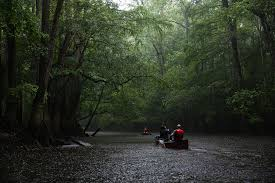

Congaree National Park is one of South Carolina’s hidden natural gems, offering visitors a chance to explore the largest intact expanse of old-growth bottomland hardwood forest in the United States. Whether you’re here to hike through the towering trees, paddle along Cedar Creek, or experience the park’s incredible biodiversity, this website is your guide to planning the perfect trip.
Hours of Operation
Park: 24/7, year round
Harry Hampton Visitor Center: 9:00 AM - 5:00 PM (Closed on major holidays).
Free Admissions
Hiking & Walking Trails
Boardwalk Loop Trail (2.4 miles, easy) – A scenic, elevated walkway through the forest.
Weston Lake Loop Trail (4.4 miles, moderate) – A beautiful loop passing by Weston Lake and floodplain habitat.
Kingsnake Trail (11.7 miles, difficult) – Ideal for birdwatchers and those looking for a longer adventure.
Canoeing & Kayaking
One of the best ways to experience Congaree is from the water. Paddle along Cedar Creek to see the park’s towering cypress trees, spot river otters, and enjoy the peaceful surroundings. Bring your own canoe/kayak or rent from a local outfitter.
Wildlife Viewing & Photography
Congaree is home to a wide variety of wildlife, including deer, bobcats, barred owls, and even alligators. The park’s remote setting makes it a great spot for birdwatching and nature photography.